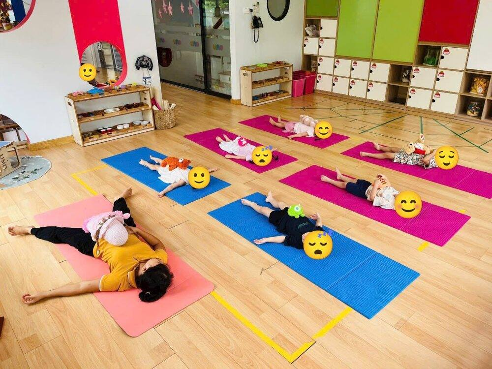

Lần đầu cô mở trang 18 của giáo trình 200 giờ, cô đếm được 22 cái tên. Hatha thì biết rồi. Còn Anabhava, Laya, Nada, Sahaj… nghe như tên những ngọn núi ở rất xa.
Học viên hỏi cô câu này nhiều lắm. Yoga có bao nhiêu loại? Loại nào tốt nhất? Mình nên tập loại nào?
Câu trả lời ngắn: yoga giống một cái cây. Một gốc, nhiều cành. Cành nào cũng hướng về cùng một chỗ, là sự hợp nhất của thân, hơi thở và tâm. Bài này cô đi qua từng cành, chậm thôi.
“Yoga là làm lắng dịu những dao động của tâm.”
Yoga Sutra của Patanjali, câu 1.2
Cô giữ nguyên 22 trường phái và lời định nghĩa của giáo trình (khung màu kem, có nhãn Giáo trình). Phần giải thích, cách tập, ai nên thận trọng là cô viết thêm từ sách và tài liệu uy tín, cùng kinh nghiệm đứng lớp. Các phong cách hiện đại như Vinyasa, Iyengar, Yin không có trong danh sách giáo trình, cô gắn nhãn Phần bổ sung.
Không có cuộc thống kê nào đếm hết người tập yoga trên cả thế giới theo từng trường phái. Nhưng có một điều ai đứng lớp cũng thấy: hầu hết các lớp có tư thế, có hơi thở, có thư giãn cuối buổi đều là Hatha, hoặc mọc ra từ Hatha. Vinyasa, Ashtanga Vinyasa, Iyengar, Hot yoga, Yin, Sivananda… tất cả đều là con cháu của nó.
Ở phòng tập ngày nay, sau Hatha thì Vinyasa Flow là kiểu lớp cô gặp nhiều nhất, nhất là ở các thành phố lớn. Riêng ở Mỹ, khảo sát “Yoga in America 2016” của Yoga Journal và Yoga Alliance ghi nhận 36,7 triệu người tập, tăng gần gấp đôi so với năm 2012. Lý do bắt đầu nhiều nhất là để dẻo dai hơn (61%) và giảm căng thẳng (56%). Tức là phần lớn người ta bước vào yoga qua cửa thân thể, cửa của Hatha.
Còn trong 22 cái tên của giáo trình, nhiều trường phái không phải để “đi tập” ở phòng tập. Chúng là cách sống (Karma), là lòng sùng kính (Bhakti), là triết học (Samkhya). Ít người biết tên, nhưng hàng triệu người Ấn Độ vẫn sống theo mỗi ngày.
2. Các trường phái liên quan với nhau thế nào?
Hãy hình dung một cái cây.
Rễ là kinh Veda, Upanishad và triết học Samkhya, có từ hàng nghìn năm trước.
Thân là bốn con đường lớn được nói trong Bhagavad Gita và Yoga Sutra: hành động, tình yêu, trí tuệ, rèn tâm.
Cành là các kỹ thuật: thân và năng lượng (Hatha, Kundalini, Tantra), âm thanh (Mantra, Nada), thiền và tập trung (Dhyana, Trataka).
Lá là những phong cách hiện đại mình gặp ở phòng tập.
Sơ đồ dưới chi tiết hơn. Bấm vào tên nào sẽ nhảy tới phần giải thích tên đó.
Bốn con đườngThân, năng lượngÂm thanhThiền, tập trungThầy trò, triết họcHiện đại (bổ sung)
Có mấy điều cô thấy hay khi nhìn vào sơ đồ này.
Một là các trường phái không tách rời. Một buổi Hatha của cô có tư thế (Hatha), có thở ong (Nada), có vài phút ngồi yên (Dhyana), có câu Om cuối buổi (Mantra), và lời nhắc đem sự nhẹ nhàng về nhà (Karma). Năm trường phái trong một tiếng đồng hồ.
Hai là cùng một tên có thể chỉ nhiều thứ. Ashtanga là 8 chi của Patanjali, mà cũng là tên một kiểu lớp nhảy chuỗi tư thế. Kriya là ba phần trong Yoga Sutra, là bài làm sạch trong Hatha, lại là tên một dòng truyền thừa. Đọc tài liệu mà thấy rối, phần lớn là vì vậy.
Ba là phong cách hiện đại phần lớn chỉ mới khoảng một trăm năm. Thầy Krishnamacharya ở Mysore dạy ba học trò nổi tiếng: B.K.S. Iyengar (Iyengar Yoga), Pattabhi Jois (Ashtanga Vinyasa) và con trai T.K.V. Desikachar (Viniyoga). Từ ba người ấy, yoga tư thế lan ra khắp thế giới.
3. 22 trường phái trong giáo trình
Giáo trình xếp theo thứ tự chữ cái. Cô gom lại thành 5 nhóm cho dễ thấy họ hàng, vẫn ghi số thứ tự gốc trên mỗi thẻ. Lời giáo trình cô chép nguyên văn, chỉ sửa vài lỗi chính tả.
🌳 Nhóm 1. Bốn con đường lớn
Bốn con đường này được nói tới trong Bhagavad Gita (Chí tôn ca) và Yoga Sutra của Patanjali. Đến cuối thế kỷ 19, Swami Vivekananda gom lại thành bốn nhánh chính mà người ta vẫn dùng tới giờ. Mỗi người hợp một cửa: người thích làm, người giàu tình cảm, người hay nghĩ, người muốn rèn tâm có hệ thống.
🤲Karma Yoga Giáo trình số 9
con đường hành động
Giáo trình viết: “Phương pháp rèn luyện của những hành động vượt qua bản thân. Là cách để tiếp cận sự giải thích trong Bhagavad-Gita (Chí tôn ca).”
Làm hết lòng. Rồi buông kết quả. Câu cô nhớ nhất trong Bhagavad Gita là ý này: mình có quyền với việc mình làm, không có quyền với quả của nó.
👤 Hợp với ai
Người bận rộn, đi làm, làm cha mẹ, người không có nhiều thời gian ngồi thiền. Ai cũng tập được.
🌱 Giúp gì
Bớt lo lắng về chuyện được mất. Làm việc vui hơn, nhẹ hơn, ít so đo.
🧘 Tập thế nào
Không cần thảm. Chọn một việc mỗi ngày, rửa bát, dạy con, phục vụ khách, làm trọn vẹn và không chờ ai khen. Làm từ thiện, giúp người mà không kể lể.
⚠️ Cô thận trọng với
Không có chống chỉ định về thân. Cô chỉ để ý người đang kiệt sức: cho đi mà quên chăm mình thì không còn là yoga nữa.
➕ Điểm mạnh
Áp dụng được ngay trong đời thường. Không cần tín ngưỡng, không cần dụng cụ.
➖ Điểm yếu
Khó đo được tiến bộ. Dễ bị hiểu nhầm thành “làm không công”, hay “cam chịu”.
Giáo trình viết: “Phương pháp rèn luyện của tình yêu và sự tận tụy, sự chịu thua … trong tình yêu.”
Có những người mở lòng ra là tâm lắng xuống. Họ không cần hiểu triết lý. Họ cần một nơi để gửi tình thương. Đó là Bhakti.
👤 Hợp với ai
Người giàu cảm xúc, có niềm tin tôn giáo, người thích hát, thích cầu nguyện. Người vừa trải qua mất mát cũng thấy được an ủi.
🌱 Giúp gì
Mềm lòng hơn, biết ơn nhiều hơn. Cái tôi nhỏ lại.
🧘 Tập thế nào
Hát kirtan (hát đối đáp những câu thiêng), cầu nguyện, dâng hoa, niệm danh. Ở nhà mình, có khi chỉ là thắp nén hương và nghĩ tới người mình thương.
⚠️ Cô thận trọng với
Người không cùng tín ngưỡng có thể thấy gượng. Cô không ép ai hát hay lạy.
➕ Điểm mạnh
Chạm vào trái tim nhanh nhất. Rất hợp với người Việt mình vốn quen thờ cúng, biết ơn tổ tiên.
➖ Điểm yếu
Thiếu trí tuệ đi kèm thì dễ thành mê tín, cuồng tín, tin mù quáng vào một người.
📖Jnana Yoga Giáo trình số 6
Gyan Yoga, con đường trí tuệ
Giáo trình viết: “Phương pháp rèn luyện của sự nhận thức đúng đắn một cách uyên thâm, thấy rõ cái thực từ những cái không thực, trực giác thôi thúc và sự thông minh trí tuệ.”
Câu hỏi của Jnana rất đơn giản. Mình là ai? Cái gì trong mình thay đổi, cái gì không? Hỏi hoài, tới lúc câu hỏi tự rơi xuống.
👤 Hợp với ai
Người thích đọc, thích suy ngẫm, hay đặt câu hỏi về cuộc sống.
🌱 Giúp gì
Nhìn sự việc rõ hơn, ít bị cảm xúc cuốn đi. Bớt khổ vì những thứ vốn không bền.
🧘 Tập thế nào
Đọc kinh sách (Upanishad, Bhagavad Gita), nghe thầy giảng, ngẫm lại, rồi ngồi yên tự quan sát. Ba bước truyền thống: nghe, suy ngẫm, thiền.
⚠️ Cô thận trọng với
Người đang rối trí, trầm cảm nặng thì những câu hỏi lớn có khi làm rối thêm. Cô để họ tập thân và hơi thở trước.
➕ Điểm mạnh
Sâu. Cho mình một cách nhìn đời rất vững.
➖ Điểm yếu
Dễ thành lý thuyết suông. Biết nhiều mà sống chưa được bao nhiêu.
👑Raja Yoga Giáo trình số 17
Rai Yoga, con đường vương giả
Giáo trình viết: “Phương pháp rèn luyện tính thống nhất của Hoàng Gia, Maha Yoga.”
“Raja” nghĩa là vua. Gọi là con đường vương giả vì nó rèn cái tâm, ông vua của cả con người. Raja Yoga thường được hiểu là con đường 8 chi trong Yoga Sutra của Patanjali.
👤 Hợp với ai
Người muốn một lộ trình đầy đủ, có thứ tự, từ đạo đức tới thiền.
Nhóm này đi vào bên trong qua cơ thể và hơi thở. Hatha là gốc của gần như mọi lớp yoga mình thấy ở phòng tập ngày nay. Các nhánh còn lại đi sâu hơn vào năng lượng, nên cần người hướng dẫn kỹ.
☀️Hatha Yoga Giáo trình số 7
con đường của thân và hơi thở
Giáo trình viết: “Thông thạo những sự khác biệt.”
Câu giáo trình ngắn mà hay. “Ha” là mặt trời, “tha” là mặt trăng. Nóng và mát, gắng sức và buông lỏng, hai thứ khác nhau được đưa về cân bằng. Sách gốc là Hatha Yoga Pradipika, khoảng thế kỷ 15.
👤 Hợp với ai
Hầu hết mọi người, nhất là người mới. Người muốn khỏe, dẻo, ngủ ngon.
🌱 Giúp gì
Dẻo dai, khỏe cơ, thăng bằng tốt hơn. Hơi thở sâu, tâm dịu lại.
🧘 Tập thế nào
Tư thế (asana) giữ vài nhịp thở, phép thở (pranayama), thư giãn cuối buổi. Sách gốc còn dạy các bài làm sạch, khóa năng lượng (bandha), ấn (mudra).
⚠️ Cô thận trọng với
Người đang chấn thương, mang thai, cao huyết áp, thoát vị đĩa đệm cần biến thể riêng. Tư thế đảo ngược không dành cho người tăng nhãn áp, cao huyết áp chưa kiểm soát.
➕ Điểm mạnh
Nền tảng của gần như mọi lớp yoga hiện đại. Thấy ngay thay đổi trên cơ thể.
➖ Điểm yếu
Dễ bị thu hẹp thành bài thể dục, quên mất phần hơi thở và tâm.
Tư thế bồ câu. Hatha là cửa ngõ mà phần lớn chúng ta bước vào yoga.
🐍Kundalini Yoga Giáo trình số 11
đánh thức năng lượng tiềm ẩn
Giáo trình viết: “Phương pháp rèn luyện của sức mạnh nhận thức và khả năng của mỗi cá nhân, nghiên cứu của sức mạnh.”
Truyền thống mô tả một năng lượng cuộn tròn ở gốc cột sống, như con rắn ngủ. Tập để đánh thức nó đi lên qua các luân xa. Cô hiểu đây là một hình ảnh, không phải chuyện thần bí. Từ năm 1969, Yogi Bhajan đưa một dạng Kundalini Yoga sang Mỹ, và đó là kiểu lớp mọi người hay gặp bây giờ.
👤 Hợp với ai
Người tập đã có nền, tâm lý vững, muốn trải nghiệm hơi thở và thiền mạnh.
🌱 Giúp gì
Tỉnh táo, tràn năng lượng. Nhiều người thấy cảm xúc được giải tỏa.
🧘 Tập thế nào
Các chuỗi bài (kriya) kết hợp động tác lặp lại, thở nhanh (breath of fire), câu mantra, khóa năng lượng, thiền.
⚠️ Cô thận trọng với
Người có tiền sử rối loạn tâm thần (loạn thần, lưỡng cực), động kinh, bệnh tim, huyết áp cao, phụ nữ mang thai. Thở mạnh và nín thở lâu có thể gây chóng mặt, hoảng hốt.
➕ Điểm mạnh
Mạnh, cảm nhận rõ ngay trong buổi. Kết hợp được cả thân, hơi thở, âm thanh, thiền.
➖ Điểm yếu
Tập quá sức hoặc tự tập theo video dễ bị rối loạn cảm xúc, mất ngủ. Rất cần thầy có kinh nghiệm.
💧Kriya Yoga Giáo trình số 10
con đường thanh lọc và hành trì
Giáo trình viết: “Phương pháp rèn luyện để tác động đến sự hoàn thiện và trong bản thân. Trong Yoga Sutra của Patanjali thì phương pháp này được kết hợp trong những bài tập làm sạch, trong những nghiên cứu sâu và sự tôn sùng của ý thức, của sự hợp nhất thành một tối cao trong tất cả.”
Trong Yoga Sutra (chương 2, câu 1), Kriya Yoga gồm ba thứ: Tapas (rèn luyện kỷ luật, tự làm sạch), Svadhyaya (tự học, tự soi mình) và Ishvara pranidhana (buông mình về điều cao cả). Hatha Yoga thì có 6 bài làm sạch gọi là kriya, như Kapalabhati, Nauli. Còn Kriya Yoga của Lahiri Mahasaya được nhiều người biết qua cuốn “Tự truyện của một Yogi” (1946).
👤 Hợp với ai
Người đã tập đều, muốn đi sâu vào hơi thở và kỷ luật bên trong.
🌱 Giúp gì
Thanh lọc thân, rèn ý chí. Biết nhìn lại mình mỗi ngày.
🧘 Tập thế nào
Ba phần của Patanjali làm hằng ngày: giữ kỷ luật nhỏ, đọc và tự soi, buông bớt. Các bài làm sạch như Kapalabhati, Nauli chỉ tập khi có người hướng dẫn.
⚠️ Cô thận trọng với
Các bài làm sạch mạnh không hợp người mang thai, đang kỳ kinh, cao huyết áp, bệnh tim, đau dạ dày, mới mổ bụng.
➕ Điểm mạnh
Vừa có phần thân, vừa có phần tâm. Rất thực tế.
➖ Điểm yếu
Cùng một chữ “kriya” mà ba truyền thống hiểu khác nhau, người mới rất dễ lẫn.
Giáo trình viết: “Kỹ thuật tâm lý sinh học tận dụng trong tantra để làm sạch tiềm thức và đẩy tâm trí lên sự trong sạch.”
Nhiều người nghe Tantra là nghĩ lệch. Thật ra Tantra là cả một kho truyền thống lớn, xuất hiện khoảng thế kỷ 5 đến 10, và chính nó sinh ra Hatha Yoga. Ý cốt lõi: không trốn khỏi thân và đời sống, mà dùng chính chúng để thức tỉnh.
👤 Hợp với ai
Người tìm hiểu sâu về lịch sử, triết lý yoga, có thầy truyền thừa.
🌱 Giúp gì
Nhìn thân thể và cảm xúc như bạn đồng hành, không phải kẻ thù.
🧘 Tập thế nào
Mantra, yantra, mudra, hình dung, hơi thở, nghi lễ. Phần lớn được truyền trực tiếp từ thầy sang trò.
⚠️ Cô thận trọng với
Người có tiền sử rối loạn tâm thần nên tránh các bài hình dung, thở sâu kéo dài. Cô cũng tránh xa những lớp “tantra” mang màu sắc tình dục, câu khách.
➕ Điểm mạnh
Là gốc rễ của Hatha, Kundalini, Laya. Hiểu Tantra là hiểu yoga từ đâu ra.
➖ Điểm yếu
Rất dễ bị hiểu sai, bị thương mại hóa. Tài liệu đáng tin không nhiều.
⚡Shakti Yoga Giáo trình số 19
con đường của sức mạnh
Giáo trình viết: “Kỹ thuật trong yoga tiếp cận sức mạnh, quyền năng và hoạt động. Nó dựa trên luyện tập và hành động để phát triển cảm giác hiệu lực và khả năng cho mỗi cá nhân hơn là luyện tập mộ đạo một mình. Shakti và Bhakti tiếp cận thấm nhuần và thực hiện cho nhau.”
Shakti là năng lượng, là sức sống, trong truyền thống Ấn Độ được hình dung như người mẹ. Cô thích ý cuối của giáo trình: sức mạnh và tình yêu nuôi nhau.
👤 Hợp với ai
Người cần thêm động lực, cần tin vào khả năng của mình. Nhiều chị em tìm đến nhánh này.
🌱 Giúp gì
Tự tin hơn, chủ động hơn. Biến năng lượng thành hành động.
🧘 Tập thế nào
Tư thế mạnh, giữ lâu, hơi thở có lực, kết hợp câu niệm và hình dung về sức sống bên trong.
⚠️ Cô thận trọng với
Người đang mệt mỏi, suy nhược cần nghỉ trước. Tư thế mạnh có lưu ý như Hatha.
➕ Điểm mạnh
Tích cực, hướng ra hành động, không trốn đời.
➖ Điểm yếu
Ít tài liệu riêng, thường được dạy lồng trong Tantra hay Kundalini. Dễ bị đẩy thành “sức mạnh cái tôi”.
🌊Laya Yoga Giáo trình số 12
con đường tan hòa
Giáo trình viết: “Kết hợp sự hữu hạn và vô hạn, dùng sự logic và Mantra với nhịp điệu và tính nhạy.”
“Laya” là tan ra, hòa vào. Như muối tan trong nước. Tâm lắng vào một âm thanh, một nhịp thở, tới lúc ranh giới giữa mình và cái mình đang nghe mờ đi. Hatha Yoga Pradipika xem Laya là đích của các bài tập.
👤 Hợp với ai
Người đã quen ngồi thiền, thích sự tĩnh, nhạy với âm thanh và nhịp điệu.
🌱 Giúp gì
Thư giãn rất sâu, tâm lặng.
🧘 Tập thế nào
Ngồi yên, theo dõi hơi thở hoặc âm thanh bên trong, đôi khi hình dung các luân xa từ dưới lên trên.
⚠️ Cô thận trọng với
Người dễ mất phương hướng, đang sang chấn tâm lý, cần có người hướng dẫn. Không tập khi đang buồn ngủ hay mệt lả.
➕ Điểm mạnh
Nhẹ nhàng với cơ thể. Đi thẳng vào sự tĩnh lặng.
➖ Điểm yếu
Khó với người mới. Dễ nhầm “ngủ gật” là “tan hòa”.
🎶 Nhóm 3. Con đường của âm thanh
Ba nhánh này dùng âm thanh làm chỗ dựa cho tâm: câu niệm, tiếng lặp lại, rồi tiếng rung rất khẽ bên trong. Dễ bắt đầu, ít rủi ro cho thân.
🕉️Mantra Yoga Giáo trình số 13
con đường của câu thần chú
Giáo trình viết: “Sự luyện tập yoga truyền thống suốt từ thời Vedic, nó dùng sự thành thạo để bảo vệ tâm trí.”
Chữ mantra ghép từ “man” (tâm) và “tra” (che chở). Một câu ngắn, lặp lại, làm chỗ nương cho tâm. Câu quen nhất là Om.
👤 Hợp với ai
Người hay suy nghĩ lan man, khó ngồi yên. Người thích âm thanh, giọng hát.
🌱 Giúp gì
Gom tâm, bớt suy nghĩ vẩn vơ. Hơi thở chậm, dài ra theo câu niệm.
🧘 Tập thế nào
Chọn một câu (Om, Om Shanti, hay một câu tiếng Việt như “bình an”), niệm to, niệm khẽ, rồi niệm thầm.
⚠️ Cô thận trọng với
Gần như ai cũng tập được. Người không cùng tín ngưỡng có thể dùng một từ trung tính.
➕ Điểm mạnh
Dễ, an toàn, tập ở đâu cũng được.
➖ Điểm yếu
Lặp máy móc thì chỉ là thói quen ngoài miệng. Có nơi biến mantra thành thứ “bùa” để bán.
📿Japa Yoga Giáo trình số 8
Jaapa Yoga, niệm lặp lại
Giáo trình viết: “Phương pháp rèn luyện của sự thông thạo Mantra.”
Japa là cách tập mantra: lặp lại đều đặn, thường đếm bằng chuỗi 108 hạt. Ảnh cô đeo chuỗi hạt trên trang này là chuỗi japa mala đó.
👤 Hợp với ai
Người cần một việc cụ thể để giữ tâm, người bận rộn muốn thiền ngắn.
🌱 Giúp gì
Tâm có nhịp, có chỗ bám. Ngón tay lần hạt cũng giúp người hay bồn chồn.
🧘 Tập thế nào
Cầm chuỗi hạt, mỗi hạt niệm một lần, đi hết một vòng 108 hạt. Mười lăm phút buổi sáng là đủ.
⚠️ Cô thận trọng với
Không có chống chỉ định đáng kể.
➕ Điểm mạnh
Đơn giản, đo được (bao nhiêu vòng), dễ duy trì thành thói quen.
➖ Điểm yếu
Dễ chạy theo số lượng, đếm cho đủ mà tâm ở nơi khác.
Chuỗi hạt japa. Mỗi hạt một hơi thở, một câu niệm.
🔔Nada Yoga Giáo trình số 14
con đường của âm thanh bên trong
Giáo trình viết: “Sự luyện tập âm thanh bên trong, sự rung động chủ yếu.”
Nada là âm thanh. Bắt đầu bằng tiếng bên ngoài (chuông, chuông xoay, tiếng hát), rồi lắng dần để nghe tiếng rất khẽ bên trong. Bài thở ong Bhramari là cánh cửa dễ nhất.
👤 Hợp với ai
Người nhạy cảm với âm thanh, người hay căng thẳng, khó ngủ. Trẻ em cũng rất thích.
🌱 Giúp gì
Thư giãn hệ thần kinh. Nhiều người thấy dễ ngủ hơn sau vài buổi.
🧘 Tập thế nào
Nghe chuông và theo dõi tới khi tiếng tắt hẳn. Thở ong: bịt nhẹ tai, ngân “mmm” khi thở ra. Ngồi yên lắng nghe.
⚠️ Cô thận trọng với
Người bị ù tai, viêm tai, nhạy cảm tiếng ồn quá mức thì tập nhẹ. Không bịt tai mạnh.
➕ Điểm mạnh
Dịu, an toàn, hợp cả người lớn tuổi và trẻ nhỏ.
➖ Điểm yếu
Khó mô tả “âm thanh bên trong”, người mới dễ nghi ngờ hoặc tưởng tượng quá đà.
Ở nhóm này, tâm được gom về một điểm: hơi thở, ngọn nến, một hình vẽ. Rồi tới lúc không cần điểm nào nữa.
🪷Ashtanga Yoga (8 chi) Giáo trình số 2
Astanga, con đường 8 nhánh
Giáo trình viết: “Phương pháp rèn luyện của 8 chi được diễn tả bởi Patanjali.”
“Ashta” là tám, “anga” là chi, nhánh. Đây là 8 chi của Raja Yoga. Cô xin nói rõ chỗ này vì nhiều người nhầm: Ashtanga 8 chi khác với Ashtanga Vinyasa, kiểu lớp nhảy chuỗi tư thế ra mồ hôi ở phòng tập hiện đại (có ở phần dưới).
👤 Hợp với ai
Người muốn hiểu yoga đầy đủ, không chỉ tư thế.
🌱 Giúp gì
Một bản đồ đi từ cách sống, tới thân, tới hơi thở, tới tâm.
🧘 Tập thế nào
Tập từng chi theo thứ tự. Thực tế thì đi song song: giữ giới luật trong đời sống, tập tư thế và hơi thở trên thảm, ngồi thiền vài phút mỗi ngày.
⚠️ Cô thận trọng với
Như Raja Yoga, không có chống chỉ định chung.
➕ Điểm mạnh
Rõ, có thứ tự, áp dụng được cho mọi trường phái.
➖ Điểm yếu
Đọc lý thuyết thì dễ, đi hết thì cả đời.
🧘Dhyana Yoga Giáo trình số 4
thiền định
Giáo trình viết: “Phương pháp rèn luyện của thiền định, Simran, sự quan tâm và tập trung vào tất cả những gì bên trong cơ thể.”
Dhyana là chi thứ bảy trong 8 chi. Simran là chữ của truyền thống Sikh, nghĩa là nhớ nghĩ, niệm tưởng. Chữ Thiền của mình cũng từ Dhyana mà ra, qua tiếng Phạn sang tiếng Trung rồi tới tiếng Việt.
👤 Hợp với ai
Người căng thẳng, mất ngủ, người muốn hiểu mình hơn. Hầu hết mọi người.
🌱 Giúp gì
Bớt căng thẳng, ngủ ngon hơn, biết dừng lại trước khi phản ứng.
🧘 Tập thế nào
Ngồi thẳng lưng, thoải mái. Theo dõi hơi thở. Tâm chạy đi thì nhẹ nhàng đưa về. Bắt đầu năm phút.
⚠️ Cô thận trọng với
Người đang trầm cảm nặng, có sang chấn, ngồi lâu trong im lặng có khi làm ký ức đau trỗi dậy. Nên có người hướng dẫn, ngồi ngắn, mở mắt cũng được.
➕ Điểm mạnh
Lợi ích được nghiên cứu nhiều nhất trong các nhánh yoga. Không tốn tiền.
➖ Điểm yếu
Kết quả đến chậm. Người mới hay nghĩ “mình thiền không được” và bỏ.
Giáo trình viết: “Phương pháp rèn luyện của sự nhìn trên một vật thể sợ hãi hoặc là bức hình của giáo viên.”
Cô đoán chữ “sợ hãi” ở đây là lỗi dịch, bản gốc có lẽ là “sacred”, tức vật thể thiêng. Trataka nằm trong 6 bài làm sạch của Hatha Yoga: nhìn không chớp vào một điểm, thường là ngọn nến, tới khi mắt rưng rưng.
👤 Hợp với ai
Người khó tập trung, học sinh, người làm việc trí óc.
🌱 Giúp gì
Gom sự chú ý. Mắt được nghỉ khỏi màn hình theo một cách khác.
🧘 Tập thế nào
Phòng tối, nến cách khoảng một sải tay, ngang tầm mắt. Nhìn ngọn lửa một phút, nhắm mắt nhìn hình ảnh còn lại. Lặp vài lần.
⚠️ Cô thận trọng với
Người động kinh (ánh lửa chập chờn), tăng nhãn áp, vừa mổ mắt, khô mắt nặng, đau nửa đầu. Người đeo kính áp tròng tháo kính ra.
➕ Điểm mạnh
Ngắn, dễ, thấy hiệu quả tập trung khá nhanh.
➖ Điểm yếu
Nhìn quá lâu gây mỏi mắt. Phải cẩn thận lửa, nhất là nhà có trẻ nhỏ.
🔺Yantra Yoga Giáo trình số 22
thiền với hình học thiêng
Giáo trình viết: “Phương pháp rèn luyện của sự tập trung tâm trí trên những hình học là đại diện cho Cosmos (vũ trụ) hoặc là quá trình năng lượng như là chakra.”
Yantra là hình vẽ: tam giác, vòng tròn, cánh sen lồng vào nhau. Nổi tiếng nhất là Sri Yantra. Mandala mà các con tô màu ở lớp cô cũng cùng họ hàng với yantra.
👤 Hợp với ai
Người thiên về hình ảnh, thích vẽ, tô màu. Trẻ em rất hợp với phiên bản mandala.
🌱 Giúp gì
Tập trung, thư giãn mắt và tâm, khơi sáng tạo.
🧘 Tập thế nào
Đặt hình ngang tầm mắt, nhìn từ ngoài vào tâm điểm, chậm. Hoặc vẽ, tô màu chậm rãi, trong im lặng.
⚠️ Cô thận trọng với
Như Trataka, người động kinh hay đau mắt thì nhìn nhẹ, không cố.
➕ Điểm mạnh
Đẹp, nhẹ nhàng, dễ đưa vào lớp trẻ em.
➖ Điểm yếu
Ý nghĩa biểu tượng phức tạp. Dễ biến thành thứ đồ “phong thủy” mua bán.
Giáo trình viết: “Phương pháp rèn luyện không sự sống, là sự luyện tập cao nhất trong đắm chìm của bản thân vào trong cái tôi mà không có sự hỗ trợ khách quan nào khác.”
Cái tên này cô tìm thấy rất ít trong tài liệu tiếng Anh. Theo đúng lời giáo trình, cô hiểu đây là tầng thiền cao nhất: không cần câu niệm, không cần hình ảnh, không cần ngọn nến. Tâm tự đứng vững. Gần với điều Patanjali gọi là samadhi không hạt giống.
👤 Hợp với ai
Người đã thiền lâu năm, có thầy hướng dẫn.
🌱 Giúp gì
Theo truyền thống, đây là sự tự do của tâm. Người bình thường như cô xem nó là cái đích để nhớ, chưa phải để tập.
🧘 Tập thế nào
Không có “bài tập” riêng. Chỉ tới được sau khi các nhánh tập trung khác đã vững.
⚠️ Cô thận trọng với
Không dành cho người mới, người đang bất ổn tâm lý.
➕ Điểm mạnh
Nhắc mình rằng mọi kỹ thuật chỉ là chiếc bè để qua sông.
➖ Điểm yếu
Rất trừu tượng, ít tài liệu đáng tin, dễ bị thổi phồng.
📜 Nhóm 5. Thầy trò, triết học và trạng thái tự nhiên
Bốn cái tên cuối không hẳn là cách tập. Chúng là nền triết học, là mối quan hệ thầy trò, là cái đích mà người tập hướng tới.
🙏Guru Yoga Giáo trình số 5
con đường qua người thầy
Giáo trình viết: “Kết hợp thông qua sự tập trung, sự nhượng bộ và đạt được phẩm hạnh liên quan đến giáo viên. Nó thường tận dụng một hình ảnh như là thiền định thêm vào để phục vụ và làm theo mẫu giáo viên.”
“Guru” là người xua bóng tối. Ở Ấn Độ và trong Phật giáo Tây Tạng, người trò quán tưởng hình ảnh thầy, học theo phẩm hạnh của thầy. Với cô, đây là lòng biết ơn người dạy mình. Không phải tôn thờ một con người.
👤 Hợp với ai
Người đang theo một truyền thống có thầy truyền thừa rõ ràng.
🌱 Giúp gì
Khiêm tốn, biết ơn. Có tấm gương sống để noi theo.
🧘 Tập thế nào
Tập đều theo lời thầy, phục vụ, quán tưởng hình ảnh thầy khi thiền.
⚠️ Cô thận trọng với
Cô thận trọng với bất kỳ ai tự xưng thầy rồi đòi tiền bạc lớn, đòi phục tùng tuyệt đối, hay chạm vào thân thể học trò. Thầy tốt luôn để trò tự đứng được.
➕ Điểm mạnh
Truyền được những điều sách không viết ra.
➖ Điểm yếu
Rủi ro lớn nhất: lệ thuộc, bị lợi dụng. Lịch sử yoga hiện đại đã có nhiều chuyện buồn như vậy.
✨Siddha Yoga Giáo trình số 15
con đường của người đã thành tựu
Giáo trình viết: “Phương pháp rèn luyện của những sự từng trải để phát triển sức mạnh và tăng thêm sự thành thạo.”
Siddha là người đã thành tựu. Siddhi là những khả năng đặc biệt mà kinh sách kể. Chính Patanjali (Yoga Sutra 3.37) lại dặn: những khả năng ấy là chướng ngại trên đường tới tự do. Cô thích lời dặn đó.
👤 Hợp với ai
Người theo truyền thống có thầy, muốn học từ kinh nghiệm sống của người đi trước.
🌱 Giúp gì
Học từ trải nghiệm thật, không chỉ từ sách.
🧘 Tập thế nào
Tập đều dưới sự dẫn dắt của thầy, kết hợp thiền, mantra, phục vụ.
⚠️ Cô thận trọng với
Cô tránh những nơi hứa hẹn “siêu năng lực”, chữa bệnh bằng năng lượng thay thuốc.
➕ Điểm mạnh
Coi trọng thực chứng, kinh nghiệm thật.
➖ Điểm yếu
Dễ dính tới mê tín và những lời hứa không kiểm chứng được.
⚖️Samkhya Giáo trình số 16
triết học nền của yoga
Giáo trình viết: “Phương pháp rèn luyện của sự sáng suốt bên trong sự tự nhiên của mọi vật, sự giảng dạy tâm linh giải phóng.”
Samkhya là một trong sáu trường phái triết học cổ của Ấn Độ, rất gần với Yoga. Nó chia thế giới làm hai: Purusha (cái biết, ý thức thuần khiết) và Prakriti (mọi thứ được biết: thân, cảm xúc, suy nghĩ). Ba tính chất sattva, rajas, tamas mà cô viết trong bài dinh dưỡng cũng từ Samkhya mà ra.
👤 Hợp với ai
Người học làm HLV, người muốn hiểu vì sao yoga dạy như vậy.
🌱 Giúp gì
Có khung lý thuyết rõ để hiểu tâm. Biết phân biệt mình với cảm xúc của mình.
🧘 Tập thế nào
Học, đọc, suy ngẫm. Khi ngồi thiền, tập quan sát: suy nghĩ đến rồi đi, còn người đang thấy thì vẫn đó.
⚠️ Cô thận trọng với
Không có chống chỉ định về thân.
➕ Điểm mạnh
Nền tảng vững cho cả Yoga Sutra và Ayurveda.
➖ Điểm yếu
Khô, nặng lý thuyết, không phải môn để tập trên thảm.
Giáo trình viết: “Luyện tập những trạng thái thoải mái, dòng chảy và sự uyển chuyển trong các sự ảnh hưởng được nhìn thấy để phục vụ cho một cái thống nhất. Nó được xem là một phần của Raja Yoga và cả sự tận tụy lẫn sức mạnh.”
Sahaja nghĩa là tự nhiên, sinh ra cùng mình. Không gồng, không cố. Cũng có một phong trào tên Sahaja Yoga thành lập năm 1970, nhưng giáo trình ở đây nói về trạng thái chung chứ không về tổ chức đó.
👤 Hợp với ai
Người cầu toàn, hay gồng, hay tự trách. Người tập lâu mà thấy mệt vì cố quá.
🌱 Giúp gì
Thả lỏng. Tập mà không khổ. Mang sự bình an ra đời sống.
🧘 Tập thế nào
Tập nhẹ, theo cảm giác cơ thể, thở tự nhiên. Ngồi yên mà không ép tâm phải lặng.
⚠️ Cô thận trọng với
Không có chống chỉ định đáng kể.
➕ Điểm mạnh
Dễ chịu, chữa bệnh “cố quá” rất hay.
➖ Điểm yếu
“Tự nhiên” dễ bị hiểu thành “tùy tiện”, không tập đều.
4. Các phong cách yoga hiện đại Phần bổ sung
Đây là những cái tên mình hay thấy trên bảng giờ học của phòng tập. Phần lớn sinh ra trong thế kỷ 20, đều là cành con của Hatha.
Phong cách
Nhịp tập
Cường độ
Người mới
Hatha (lớp phổ thông)
Vừa
●●○○○
Rất hợp
Vinyasa Flow
Nhanh, liền mạch
●●●●○
Nên có nền trước
Ashtanga Vinyasa
Nhanh, chuỗi cố định
●●●●●
Khó
Iyengar
Chậm, chính xác
●●○○○
Rất hợp
Hot yoga, Bikram
Vừa, phòng nóng
●●●●○
Cẩn thận
Kundalini
Thở mạnh, lặp lại
●●●○○
Cần thầy kỹ
Sivananda
Vừa, bài cố định
●●○○○
Rất hợp
Yin
Rất chậm, giữ lâu
●○○○○
Hợp
Restorative
Nằm nghỉ có đỡ
○○○○○
Rất hợp
Bảng do cô tự tổng hợp để dễ hình dung. Cường độ thật còn tùy lớp và tùy thầy.
🌀Vinyasa Flow Phần bổ sung
nối tư thế theo hơi thở
👤 Hợp với ai
Người khỏe, thích vận động, thích nhạc, muốn ra mồ hôi.
🌱 Giúp gì
Sức bền, tim phổi, dẻo dai. Đầu óc nhẹ vì phải theo nhịp thở.
🧘 Tập thế nào
Mỗi động tác đi cùng một hơi hít hoặc thở ra, các tư thế nối liền như một dòng chảy. Chuỗi Chào mặt trời là ví dụ quen nhất. Bắt nguồn từ cách dạy của Krishnamacharya.
⚠️ Cô thận trọng với
Người mới hoàn toàn, người đau khớp, mang thai (cần lớp riêng). Đi nhanh dễ bỏ qua định tuyến.
➕ Điểm mạnh
Sinh động, không nhàm, mỗi lớp mỗi khác.
➖ Điểm yếu
Tùy thầy rất nhiều. Lớp nhanh quá thì thành thể dục, dễ chấn thương cổ tay, vai.
Người thích kỷ luật, thích biết trước mình sẽ tập gì, khỏe và kiên trì.
🌱 Giúp gì
Sức mạnh, sức bền, sự tập trung. Thấy tiến bộ rõ theo từng tuần.
🧘 Tập thế nào
Do Pattabhi Jois (học trò Krishnamacharya) phát triển ở Mysore, Ấn Độ. Các tư thế theo chuỗi cố định, luôn theo một thứ tự, có 6 chuỗi từ dễ tới khó. Thở Ujjayi, khóa bandha, điểm nhìn drishti.
⚠️ Cô thận trọng với
Người mới, người thừa cân nặng, đau lưng, đau khớp gối. Tự ép mình vào tư thế khó dễ chấn thương.
➕ Điểm mạnh
Hệ thống chặt, tự tập ở nhà được khi đã thuộc.
➖ Điểm yếu
Lặp lại hằng ngày dễ chán. Cường độ cao, không dễ điều chỉnh cho từng người.
Người mới, người lớn tuổi, người đang phục hồi chấn thương, người đau lưng, cứng người.
🌱 Giúp gì
Tư thế đúng, cơ thể cân đối, hiểu rõ cơ thể mình.
🧘 Tập thế nào
B.K.S. Iyengar (cũng là học trò Krishnamacharya) chú trọng định tuyến từng chi tiết, dùng gạch, dây, chăn, ghế để ai cũng vào được tư thế. Cuốn “Light on Yoga” (1966) của ông tới giờ vẫn là sách gối đầu của nhiều HLV.
⚠️ Cô thận trọng với
Hầu như ai cũng tập được vì có dụng cụ. Người thích vận động nhanh có thể thấy chậm.
➕ Điểm mạnh
An toàn, điều chỉnh tốt cho từng người. Rất hợp người học làm HLV.
Người khỏe mạnh, chịu nóng tốt, thích cảm giác ra nhiều mồ hôi.
🌱 Giúp gì
Cơ ấm nhanh nên thấy dẻo hơn. Nhiều người thích cảm giác “xả” sau buổi tập.
🧘 Tập thế nào
Bikram Yoga là chuỗi 26 tư thế và 2 bài thở, 90 phút, trong phòng khoảng 40°C. Hot Yoga là tên chung cho các lớp tập trong phòng nóng.
⚠️ Cô thận trọng với
Phụ nữ mang thai, người bệnh tim, huyết áp cao hoặc thấp, tiểu đường, người dễ say nóng, người lớn tuổi. Dễ mất nước, chóng mặt. Cảm giác dẻo do nóng làm người ta kéo giãn quá đà.
➕ Điểm mạnh
Bài cố định, dễ theo. Cảm giác sảng khoái.
➖ Điểm yếu
Rủi ro nhiệt cao, nhất là ở xứ nóng ẩm như mình. Mồ hôi ra nhiều không có nghĩa là giảm mỡ.
Người căng thẳng, người tập thể thao nhiều cần cân bằng, người khó ngủ.
🌱 Giúp gì
Thư giãn sâu, mềm vùng hông, lưng. Tập kiên nhẫn ngồi với cảm giác khó chịu nhẹ.
🧘 Tập thế nào
Phát triển ở Mỹ cuối thế kỷ 20 (Paulie Zink, Paul Grilley, Sarah Powers), mượn ý âm dương của Đạo gia. Các tư thế ngồi, nằm, giữ 3 đến 5 phút, cơ thả lỏng.
⚠️ Cô thận trọng với
Người khớp quá lỏng (tăng động khớp), vừa chấn thương dây chằng, mang thai (dây chằng đã lỏng sẵn). Giữ lâu tư thế sai dễ đau.
➕ Điểm mạnh
Yên, sâu, gần với thiền. Hợp buổi tối.
➖ Điểm yếu
Ít tăng sức mạnh. Người thích vận động thấy chán.
🛏️Restorative Yoga Phần bổ sung
yoga phục hồi
👤 Hợp với ai
Người mệt mỏi, sau ốm, mất ngủ, lo âu, người lớn tuổi, phụ nữ sau sinh (khi bác sĩ cho phép).
🌱 Giúp gì
Nghỉ sâu, hệ thần kinh dịu lại. Nhiều người ngủ ngon hơn.
🧘 Tập thế nào
Phát triển từ cách dạy của Iyengar, được Judith Lasater phổ biến. Cơ thể được đỡ hoàn toàn bằng gối, chăn, gạch, mỗi tư thế nằm nghỉ 5 đến 20 phút.
⚠️ Cô thận trọng với
Ít chống chỉ định. Mang thai thì tránh nằm ngửa lâu ở các tháng cuối.
➕ Điểm mạnh
Ai cũng tập được, rất nhẹ.
➖ Điểm yếu
Cần nhiều dụng cụ. Không dành cho mục tiêu khỏe cơ, giảm cân.
🌼Sivananda Yoga Phần bổ sung
12 tư thế cơ bản
👤 Hợp với ai
Người mới, người thích một lộ trình ổn định, cân bằng cả thân và tâm.
🌱 Giúp gì
Nền tảng Hatha vững. Hiểu yoga là một lối sống, không chỉ tư thế.
🧘 Tập thế nào
Do Swami Vishnudevananda lập theo lời dạy của thầy là Swami Sivananda. Mỗi buổi gồm thở, Chào mặt trời, 12 tư thế cơ bản và thư giãn. Đi kèm 5 nguyên tắc: tập đúng, thở đúng, thư giãn đúng, ăn uống đúng, suy nghĩ tích cực và thiền.
⚠️ Cô thận trọng với
Tư thế đảo ngược (trồng chuối, cây nến) có trong bài cơ bản, người cao huyết áp, đau cổ cần biến thể.
➕ Điểm mạnh
Cân bằng, dễ hiểu, có cả phần ăn uống và lối sống.
➖ Điểm yếu
Bài lặp lại, ít thay đổi. Có màu sắc tâm linh, không phải ai cũng thích.
Tư thế vũ công. Cùng một tư thế, mỗi trường phái dạy một cách.
5. Yoga hỗ trợ gì cho cuộc sống?
Cô không dám nói yoga chữa được bệnh. Cô chỉ kể điều cô thấy ở học viên, và điều nghiên cứu đã ghi nhận.
Theo Trung tâm Sức khỏe Bổ sung và Tích hợp Quốc gia Hoa Kỳ (NCCIH), các nghiên cứu cho thấy yoga có thể giúp giảm đau lưng dưới và đau cổ, giảm căng thẳng, cải thiện giấc ngủ, thăng bằng và tâm trạng. Yoga là phần hỗ trợ, đi cùng điều trị của bác sĩ, không thay thế.
Còn mỗi trường phái chạm vào một góc khác của đời sống:
💼
Công việc
Karma. Làm hết lòng, bớt so đo, bớt kiệt sức vì kết quả.
👨👩👧
Gia đình
Bhakti. Thương nhiều hơn, biết ơn nhiều hơn, bớt đòi hỏi.
🧭
Quyết định
Jnana. Nhìn rõ điều gì quan trọng thật, điều gì chỉ là cảm xúc nhất thời.
💪
Cơ thể
Hatha, Iyengar, Vinyasa. Đỡ đau mỏi vì ngồi nhiều, dẻo và khỏe hơn.
😴
Căng thẳng, giấc ngủ
Dhyana, Nada, Yin, Restorative. Hệ thần kinh dịu lại, dễ ngủ hơn.
🎯
Học tập, tập trung
Trataka, Yantra, Japa. Gom sự chú ý, bớt xao nhãng.

Thư giãn cuối buổi ở lớp trẻ em. Vài phút nằm yên, cũng là một nhánh nhỏ của yoga.
6. Vậy chọn trường phái nào?
Không có trường phái tốt nhất. Chỉ có trường phái hợp với mình, ở lúc này. Ba năm sau có khi lại khác.
Bấm vào điều mình đang cần:
Cô sẽ gợi ý vài trường phái để bắt đầu.
Mà nói thật, cái chọn quan trọng hơn là chọn người dạy. Một thầy cô biết lắng nghe cơ thể học viên, biết nói “hôm nay mình nghỉ tư thế này nhé”, quý hơn mọi cái tên.
Cô hay để ý
Những nhánh thở mạnh, nín thở, thiền sâu (Kundalini, Kriya, Tantra, Laya): cô không cho tự tập theo video. Người có tiền sử rối loạn tâm thần, động kinh, bệnh tim, huyết áp cao, phụ nữ mang thai thì tránh hoặc chỉ tập dưới sự hướng dẫn kỹ.
Hot yoga: không dành cho người mang thai, bệnh tim, huyết áp cao hay thấp, người dễ say nóng. Uống nước đủ, thấy chóng mặt là dừng ngay.
Trataka (nhìn nến): người động kinh, tăng nhãn áp, vừa mổ mắt thì không tập.
Thầy và những lời hứa: cô thận trọng với nơi nào hứa “chữa khỏi bệnh”, “mở siêu năng lực”, đòi phục tùng tuyệt đối. Yoga thật làm mình tự do hơn, không lệ thuộc hơn.
Đang có bệnh hay đang mang thai: hỏi bác sĩ trước khi bắt đầu. Bài này để chia sẻ kiến thức yoga, không thay cho tư vấn y khoa.
Điều cô học được
Hồi mới học, cô muốn biết hết. Tên nào cũng chép, nhánh nào cũng muốn thử.
Giờ thì khác. Cô thấy 22 cái tên giống 22 cánh cửa của cùng một ngôi nhà. Có người vào bằng cửa trước, có người đi cửa sau, có người trèo qua cửa sổ. Vào được tới nơi rồi, ngồi xuống, thở. Ai cũng thấy cùng một khoảng lặng.
Không cần đi hết 22 cửa đâu. Một cửa thôi. Đi cho tới.
🌿 Muốn tập hoặc học dạy yoga cùng cô?
Lớp người lớn của cô theo nền Hatha, kết hợp hơi thở, thư giãn và thiền ngắn. Có lớp online qua Zoom và lớp kèm 1 kèm 1 (500.000đ / giờ). Muốn đem yoga tới các con, có khóa đào tạo HLV Yoga trẻ em 30 giờ.
Giáo trình Khóa đào tạo HLV Hatha Yoga 200h (Yoga Thân Khí Thiền), GV Thầy Nguyễn Văn Hiển, trang 18 “Các trường phái Yoga”. Danh sách 22 trường phái và lời định nghĩa trong khung màu kem lấy từ đây.